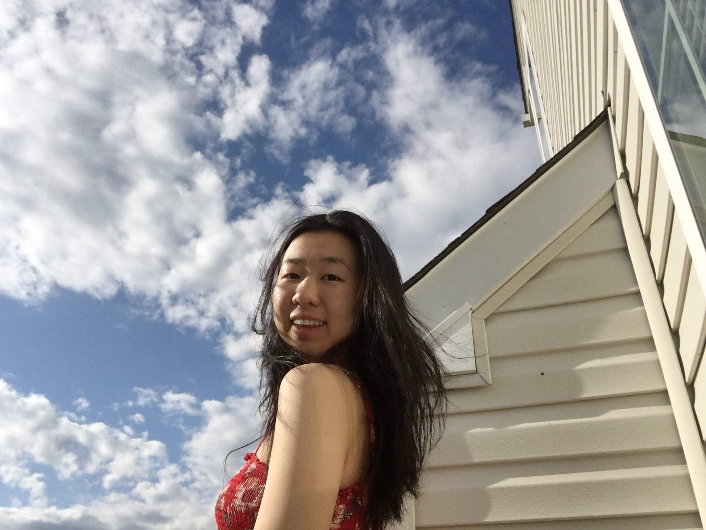

Audrey Yang
['ɑʊ.d͡ʒɹi 'jɑŋ]
Hello, I'm Audrey! I'm a rising sophomore at the University of Pennsylvania studying
Computer Science and Linguistics.
I have the most experience with Java and Python, though I have also used
HTML, CSS, Javascript, and Git, and I'm constantly in the process of
learning more. Check out my
Projects page to see
some of what I've worked on before. I also have a bit of experience
doing research in language acquisition.
